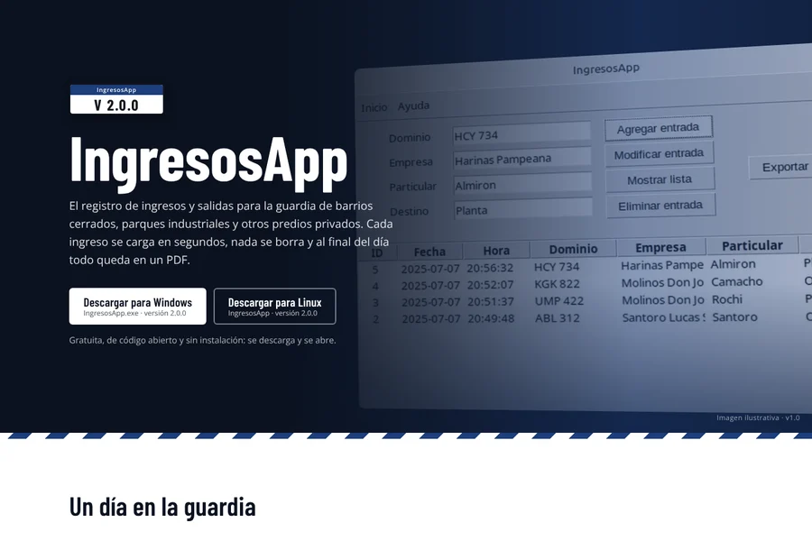
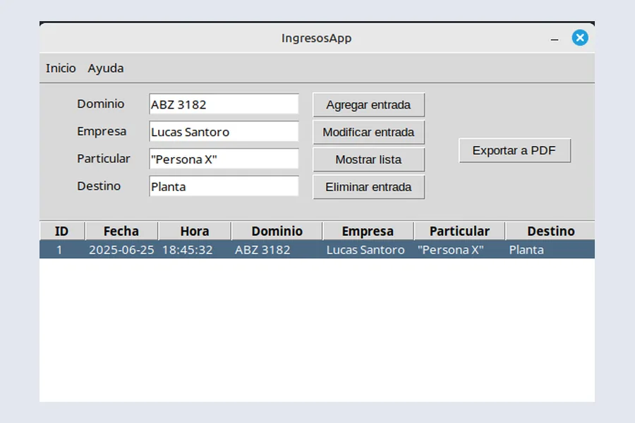

zomboid-cloud-project
Repositorio privado por el momento.
Aprendo tecnología construyendo cosas. La mayor parte de lo que sé viene de proyectos personales: tomo un problema real, armo una solución que funcione, la documento y la sigo mejorando a medida que aprendo.
Hoy estoy enfocado en Python, AWS e infraestructura sobre Linux: desplegar y mantener mis propios servicios, y aprender en el camino las herramientas que los rodean, como Git y Docker.
Proyectos personales en los que trabajé o estoy trabajando. El código y la documentación de cada uno están en GitHub.
Repositorio privado por el momento.

Sitio web de IngresosApp, con la descarga de la aplicación y su historial de versiones. Desplegado en una instancia EC2 de AWS con Linux, Nginx y Gunicorn.
Tecnologías: Python · Flask · Bootstrap · AWS EC2 · Nginx

Aplicación de escritorio para registrar los ingresos a un predio privado, como un barrio cerrado o un parque industrial. Permite cargar, editar y eliminar registros y exportarlos a PDF.
Tecnologías: Python · Tkinter · SQLite · FPDF